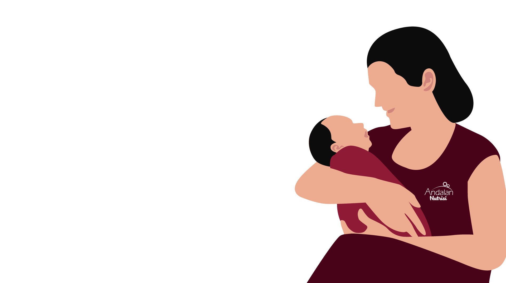

Untuk 1000 Hari Emas si Buah Hati
#kesempurnaankasihibu
Breastfeeding
is a mother's gift
to herself, her baby, and the earth
Untuk 1000 Hari Emas si Buah Hati
#kesempurnaankasihibu
Breastfeeding
is a mother's gift
to herself, her baby, and the earth
Lebih dari
1,3 juta
bayi di seluruh dunia dapat diselamatkan
dengan pemberian ASI eksklusif / tahun.
Sayangnya, data praktik ASI eksklusif
masih memprihatinkan.
Angka kesuksesan ASI eksklusif
di Indonesia hanya
54,3%*
Hampir separuh Buah Hati di Indonesia tidak mendapatkan manfaat luar biasa dari ASI.
ASI TRANSISI
KOLOSTRUM
ASI MASTUR
Foremilk: air + vitamin + protein
Hindmilk: kadar lemak lebih tinggi diproduksi setelah ASI transisi
Nutrisi seimbang dalam ASI sangat spesifik
tidak bisa digantikan susu formula.


0-6 Bulan

9-12 Bulan

0-6 Bulan

9-12 Bulan

Sayangnya,

wanita di dunia tidak mempraktekkan pemberian ASI eksklusif
secara maksimal, termasuk di Indonesia.
(Data RISKESDAS Kementerian Kesehatan RI, 2013)
Manfaat ASI Eksklusif
Bagi Bayi

Bagi Bunda

Mendekap Buah Hati selama menyusui membuatnya merasakan kasih sayang dan rasa aman.
Ini menjadi dasar perkembangan emosi dan membentuk kepribadian baik.

Puting rata

Buah hati tidak mau menyusu
Payudara membengkak atau terluka akibat menyusui (Mastiti)
ASI terlalu berlimpah (Hiperlaktasi)
ASI tidak keluar
ASI tidak kental dan warnanya bening
ASI sedikit

Kushandari Arfanidewi (32 tahun)
Brand Ambassador Andalan Kontrasepsi 2019

ASI adalah hak Buah Hati dari Bundanya. Selain untuk memenuhi kebutuhan nutrisi, yang tak kalah pentingnya fakta bahwa menyusui merajut bonding antara Bunda dan Buah Hati untuk kehidupannya di masa mendatang. Saya menjaga asupan sehari-hari agar selalu baik, berpikir positif, cukup istirahat supaya ASI lancar, dan tentu katuk sebagai Andalan-ku.
Don't
Menggunakan penyambung puting atau menarik-narik puting agar membesar.
Do
Tetap lakukan Inisiasi Menyusu Dini (IMD). Biarkan Buah Hati melekat pada payudara untuk mengenali bentuk puting Bunda, secara perlahan ia akan terbiasa. Sebab ASI tidak keluar melalui puting, namun juga melalui aerola
atau daerah gelap di sekitar puting.
Buah Hati Tidak Mau Menyusui
Don't
Terlalu dini mengenalkan dot. Buah Hati bisa mengalami 'bingung puting' dan lebih memilih menyusu dari dot daripada secara langsung.
Do
Habiskan lebih banyak waktu bersama Buah Hati dan lebih sering tawarkan untuk menyusu secara langsung. Gunakan sendok atau pipet untuk memberikan ASI perah pada Buah Hati.

Don't
Berhenti menyusui. Menyusui justru membantu membersihkan infeksi dan tidak akan membahayakan Buah Hati.
Do
Untuk payudara yang bengkak, lakukan pemijatan payudara yang bisa dibantu oleh perawat/tenaga ahli/pasangan agar saluran ASI kembali lentur. Untuk payudara yang lecet, cek pelekatan dan juga tali lidah si Buah Hati.
Bila perlu, konsultasikan dengan dokter ahli laktasi. Sementara itu, oleskan sedikit ASI pada kedua puting sebelum dan setelah menyusui agar lukanya cepat sembuh, karena ASI adalah obat alami untuk infeksi.
Don't
Menunggu Buah Hati benar-benar lapar untuk menyusui. Buah Hati yang lapar akan mengisap lebih cepat sehingga mudah tersedak saat aliran ASI terlalu deras.
Do
Tampung ASI yang berlebih dan simpan dalam freezer sebagai stok. ASI perah yang disimpan dalam freezer dapat bertahan selama 3-5 hari. Bunda juga bisa mendonorkan ASI untuk bayi-bayi lain yang membutuhkan. Jadi, selain
menyehatkan Buah Hati, Bunda juga turut meningkatkan kesehatan anak Indonesia.
Don't
Menganggap ASI tidak keluar karena tubuh tidak memproduksi ASI. ASI tidak bisa langsung keluar begitu saja, namun membutuhkan stimulasi.
Do
Produksi ASI menyesuaikan kebutuhan Buah Hati. Pada awal kelahiran lambung Buah Hati masih berukuran kecil, setetes ASI bisa mengenyangkan baginya. Tetap tenang Bunda, lakukan IMD dan susui Buah Hati setiap 2-3 jam
sekali untuk merangsang tubuh memroduksi ASI. Bantu dengan memerah ASI secara berkala agar ASI terangsang untuk keluar.
Don't
Buru-buru melepas payudara saat Buah Hati sedang menyusu. Kandungan lemak yang membuat ASI terlihat kental justru lebih banyak terdapat pada ASI terakhir.
Do
Terus susui sampai habis karena ASI yang keluar selalu menyesuaikan kebutuhan Si Buah Hati. Bantu dengan mengonsumsi suplemen pelancar ASI Lactaboost agar kualitas ASI Bunda selalu terjaga.
Don't
Putus asa dan langsung beralih ke susu formula. Ingat Bunda, sebaik apapun kandungan nutrisi susu formula, tak akan mampu menggantikan kebaikan alami ASI untuk Buah Hati.
Do
Stay Happy! Bersyukurlah atas jumlah ASI yang Bunda produksi. Perbanyak aktivitas skin-to-skin dengan Buah Hati untuk merangsang hormon oksitosin yang melancarkan produksi ASI. Tubuh yang bugar dan mood yang baik
akan membantu kelancaran aliran ASI. Untuk Bunda yang bekerja, memerah ASI di kantor bisa dilakukan sembari melihat foto si Buah Hati untuk meningkatkan ikatan batin. Konsumsi suplemen pelancar ASI Lactaboost untuk membantu stimulasi
produksi ASI.